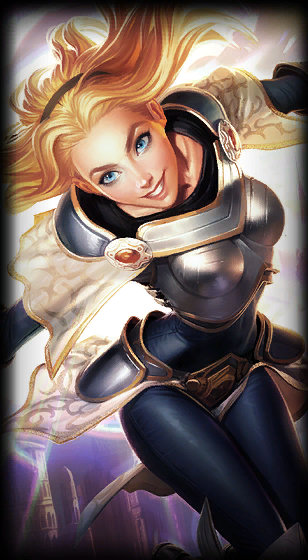

About League
League of Legends (kurz: LoL oder nur League) ist ein vom US-amerikanischen Riot Games entwickeltes und
betriebenes Multiplayer-Online-Battle-Arena-Computerspiel (MOBA), das am 27. Oktober 2009 für Windows und macOS
veröffentlicht wurde.
Es erschien als Free-to-play-Titel und wurde zeitweise von etwa 100 Millionen Spielern monatlich gespielt.[1]
Jeder Spieler steuert eine Spielfigur aus der Vogelperspektive über das quadratische Spielfeld und versucht die
eigene Hälfte des Spielfelds zu verteidigen.
Das Spielprinzip ist von Defense of the Ancients, einer Mod für Warcraft III, inspiriert. Im klassischen
Spielmodus von League of Legends treten zwei Teams aus je fünf Spielern gegeneinander an. Ziel des Spiels ist
die Zerstörung der gegnerischen Basis in der der eigenen Basis gegenüberliegenden Ecke des Spielfelds. Innerhalb
eines etwa 20- bis 50-minütigen Spiels gewinnen die Spielfiguren stetig an Stärke und Ausrüstung dazu.
League of Legends ist eine beliebte Disziplin im E-Sport. Mit einer internationalen Fan- und Spielerszene sowie
zwölf Dachligen und zahlreichen Regionalligen wird das Spiel regelmäßig als weltweit größter E-Sport bezeichnet.
Turniere, wie die jährlich stattfindende League of Legends World Championship, wurden teilweise von über 100
Millionen Zuschauern verfolgt.
Qiyana Gebietering der Elemente

In the jungle city of Ixaocan, Qiyana plots her own ruthless path to the high seat of the Yun Tal. Last in
line to succeed her parents, she faces those who stand in her way with brash confidence and unprecedented
mastery over elemental magic. With the land itself obeying her every command, Qiyana sees herself as the
greatest elementalist in the history of Ixaocan—and by that right, deserving of not only a city, but an
empire.
The youngest child in a ruling family, Qiyana grew up believing she would never inherit the high seat of the
Yun Tal. As her parents governed Ixaocan, a city-state hidden deep in the jungles of Ixtal, they raised
their children to succeed them, schooling them in the proud traditions of their isolated nation. Primed to
rule before her, Qiyana’s nine older sisters received most of the attention, and she often longed to find
her own meaningful place in the family.
That place became clear the day young Qiyana began to learn the ancient elemental magic of Ixtal. Soon after
she took up lessons, she realized she was blessed with extraordinary talent. Though Qiyana was only seven
years old, she mastered advanced techniques within weeks, while some of her older sisters had yet to grasp
the basics after years of study.
Akali

Abandoning the Kinkou Order and her title of the Fist of Shadow, Akali now strikes alone, ready to be the
deadly weapon her people need. Though she holds onto all she learned from her master Shen, she has pledged
to defend Ionia from its enemies, one kill at a time. Akali may strike in silence, but her message will be
heard loud and clear: fear the assassin with no master.
Ionia has always been a land of wild magic, its vibrant people and powerful spirits seeking to live in
harmony… but sometimes this peaceful equilibrium does not come easily. Sometimes it needs to be kept in
check.
The Kinkou are the self-appointed keepers of Ionia’s sacred balance. The order’s loyal acolytes walk the
spirit and material realms, mediating conflicts between them and, when necessary, intervening by force. Born
among their ranks was Akali, daughter of Mayym Jhomen Tethi, the renowned Fist of Shadow. Mayym and her
partner Tahno raised their daughter within the Kinkou Order, under the watchful leadership of Great Master
Kusho, the Eye of Twilight.
Whenever her parents were called away, other members of the order stepped in as Akali’s surrogate family.
Kennen, the Heart of the Tempest, spent many hours with the young girl, teaching her shuriken techniques,
and emphasizing speed and agility over strength.
Fizz
Fizz is an amphibious yordle, who dwells among the reefs surrounding Bilgewater. He often retrieves and
returns the tithes cast into the sea by superstitious captains, but even the saltiest of sailors know better
than to cross him—for many are the tales of those who have underestimated this slippery character. Often
mistaken for some manner of capricious ocean spirit, he seems able to command the beasts of the deep, and
delights in confounding his allies and enemies alike.
In ages past, the oceans of Runeterra were home to civilizations far older than those of the land. In the
depths of what is now the Guardian’s Sea, a great city once stood—it was here that the yordle Fizz made his
home. He lived alongside the artisans and warriors of that proud, noble race. Even though he was not one of
them, they treated him as an equal, and his playful nature and tall tales of adventures in the open sea made
him welcome at any gathering.
But the world was changing. The oceans were growing warmer, emboldening fierce predators to rise up from the
deepest trenches. Other settlements had fallen silent, but the rulers of the great city could still not
agree on how to deal with the threat. Fizz pledged to roam the seas in search of survivors, or anyone who
knew what had happened.
Then, one dark day, the gigalodons came.
Kha'Zix

The Void grows, and the Void adapts—in none of its myriad spawn are these truths more apparent than Kha’Zix.
Evolution drives the core of this mutating horror, born to survive and to slay the strong. Where it
struggles to do so, it grows new, more effective ways to counter and kill its prey. Initially a mindless
beast, Kha’Zix’s intelligence has developed as much as its form. Now, the creature plans out its hunts, and
even utilizes the visceral terror it engenders in its victims.
A vicious Void predator, Kha'Zix infiltrated Valoran to devour the land's most promising creatures. With
each kill he absorbs his prey's strength, evolving to grow more powerful. Kha'Zix hungers most to conquer
and consume Rengar, the one beast he considers his equal.
When Kha'Zix crossed over into this world, he was fragile and ravenous. The animals he first encountered
were too small to fuel the rapid evolution he craved. Kha'Zix focused his hunger on the most dangerous
creatures he could find, risking his life to satisfy his need. With each kill he feasted and changed,
becoming a stronger, faster predator. Kha'Zix soon chased his prey with unrestrained aggression, believing
he was unstoppable. One day, while savoring a fresh kill, the predator became the prey. From cover a
creature pounced in a blur of fangs and steel, tackling him to the ground.
Rek'sai

An apex predator, Rek’Sai is a merciless Void-spawn that tunnels beneath the ground to ambush and devour
unsuspecting prey. Her insatiable hunger has laid waste to entire regions of the once-great empire of
Shurima—merchants, traders, even armed caravans, will go hundreds of miles out of their way to avoid her and
her offspring’s hunting grounds. All know that once Rek’Sai is seen on the horizon, death from below is all
but guaranteed.
The largest and fiercest of her species, Rek'Sai is a merciless predator that tunnels through the earth to
ambush and devour her prey. Her insatiable hunger has laid waste to entire regions of the once-great
Shuriman empire. Merchants, traders and armed caravans will go hundreds of miles out of their way to avoid
these vast areas, though cunning bandits have been known to lure the unwary into her killing grounds. Once
Rek'Sai detects you, your fate is sealed. There is no hope of escape; she is death from below the sand.
Warwick

Warwick is a monster who hunts the gray alleys of Zaun. Transformed by agonizing experiments, his body is
fused with an intricate system of chambers and pumps, machinery filling his veins with alchemical rage.
Bursting out of the shadows, he preys upon those criminals who terrorize the city’s depths. Warwick is drawn
to blood, and driven mad by its scent. None who spill it can escape him.
Though many think of Warwick as no more than a beast, buried beneath the fury lies the mind of a man—a
gangster who put down his blade and took up a new name to live a better life. But no matter how hard he
tried to move on, he could never escape the sins of his past.
Memories of that time come to Warwick in flashes before they’re inevitably lost, replaced by searing echoes
of the days he spent strapped to a table in Singed’s lab, the mad chemist’s face looming above him.
His world a haze of pain, Warwick could not recall how he fell into Singed’s grasp… and even struggled to
remember a time before the suffering began. The scientist patiently carved into him, installing pumps and
hoses to inject chemicals into his veins, seeking what an alchemist always seeks: transmutation.
Olaf
An unstoppable force of destruction, the axe-wielding Olaf wants nothing but to die in glorious combat.
Hailing from the brutal Freljordian peninsula of Lokfar, he once received a prophecy foretelling his
peaceful passing—a coward's fate, and a great insult among his people. Seeking death, and fueled by rage, he
rampaged across the land, slaughtering scores of great warriors and legendary beasts in search of any
opponent who could stop him. Now a brutal enforcer for the Winter's Claw, he seeks his end in the great wars
to come.
Most men would say that death is a thing to be feared; none of those men would be Olaf. The Berserker lives
only for the roar of a battle cry and the clash of steel. Spurred on by his hunger for glory and the looming
curse of a forgettable death, Olaf throws himself into every fight with reckless abandon. Surrendering to
the bloodlust deep within his being, Olaf is only truly alive when grappling with the jaws of death.
The coastal peninsula of Lokfar is among the most brutal places in the Freljord. There, rage is the only
fire to warm frozen bones, blood is the only liquid that flows freely, and there is no worse fate than to
grow old, frail, and forgotten.
Diana

Bearing her crescent moonblade and clad in shimmering armor the color of winter snow at night, Diana is a
living embodiment of the silver moon’s power. Imbued with the essence of an Aspect from beyond Targon’s
towering summit, Diana is no longer wholly human, and struggles to understand her power and purpose in this
world.
Diana did not belong on Mount Targon. A group of Solari hunters discovered her swaddled between her
frost-claimed parents—strangers to this land, who had clearly traveled a long way. The hunters brought her
to their temple, dedicated her, and raised her as a member of the Tribes of the Last Sun, known to many as
the Rakkor.
Like all of the Solari faith, she underwent rigorous physical and religious training. However, unlike
others, Diana was determined to understand why the Solari act the way they do, and the reasoning behind
their beliefs. She spent her evenings digging through the libraries, devouring texts with only pale
moonlight to read by. Paradoxically, this pursuit provided more questions than answers, and her teachers’
aphoristic replies did little to sate her inquisitive mind.
Hecarim
Hecarim is a spectral fusion of man and beast, cursed to ride down the souls of the living for all eternity.
When the Blessed Isles fell into shadow, this proud knight was undone by the destructive energies of the
Ruination, along with all his cavalry and their mounts. Now, whenever the Black Mist reaches out across
Runeterra, he leads their devastating charge, reveling in the slaughter and crushing foes beneath his
armored hooves.
Born into an empire long since gone to dust and forgotten, Hecarim was a lieutenant of the Iron Order—a
brotherhood sworn to defend their king’s lands.
As Hecarim won victory after victory from the back of his mighty warhorse, the commander of the Iron Order
saw in him a potential successor… but also a growing darkness. His obsessive hunger for glory was eroding
his honor, and over time the knight-commander came to realize this young lieutenant must never lead them.
When he was told this, Hecarim was furious. Even so, he bit back his anger, and continued in his duties.
When they next rode to war, the commander found himself surrounded by enemies, and cut off from his fellow
knights. Hecarim, seeing his chance, turned away and left him to die. At battle’s end, the Iron Order,
oblivious to what Hecarim had done, knelt on the bloody ground and swore allegiance to him.
Lulu

The yordle mage Lulu is known for conjuring dreamlike illusions and fanciful creatures as she roams Runeterra
with her fairy companion Pix. Lulu shapes reality on a whim, warping the fabric of the world, and what she
views as the constraints of this mundane, physical realm. While others might consider her magic at best
unnatural, and at worst dangerous, she believes everyone could use a touch of enchantment.
Lulu was always a caring and deeply empathetic yordle, who lived as much in her whimsical daydreams as in
reality. One day, while wandering the material realm, she came upon what appeared to be a bird with a broken
wing. She ran to help, at which point the bird turned into a tiny, mischievous fae spirit. Before she could
react, the faerie grabbed her walking stick and took off. Giggling, Lulu gave chase.
The spirit led her far into the forest. They went over boulders, under logs, and around ancient, overgrown
stone circles. The faerie darted into a cave hidden behind a waterfall, and Lulu went after it. It flittered
ahead, always just out of reach.
Janna

An ancient and mysterious wind spirit, Janna has come to protect the dispossessed of Zaun. While her
presence is most often felt as a soothing breeze or a ferocious tempest, she also can manifest in
corporeal form as an ethereal figure, comforting the downtrodden. Over the eons, Janna has witnessed the
rise and fall of civilizations. Through it all, she remains steadfast as a beacon of hope to those in
need.
Since ancient times, there have been those who prayed to the winds. From sailors seeking good weather to
the downtrodden calling on winds of change, mortals have placed their hope in the tempests and gales
that sweep across Runeterra.
Surprisingly, the wind sometimes would seem to answer. Seafarers might spot a bright blue bird just
before a healthy tailwind billowed their sails. Others could swear they’d heard a whistling in the air
right before a storm, as if to warn them of its approach. As word of these omens spread, sightings of
the bird grew more common. Some even swore they had seen the bird transform into a woman. With tapered
ears and flowing hair, this mysterious maiden was said to float above the water and direct the wind with
a flick of her staff.
Karma
No mortal exemplifies the spiritual traditions of Ionia more than Karma. She is the living embodiment of
an ancient soul reincarnated countless times, carrying all her accumulated memories into each new life,
and blessed with power that few can comprehend. She has done her best to guide her people in recent
times of crisis, though she knows that peace and harmony may come only at a considerable cost—both to
her, and to the land she holds most dear.
Karma is the living embodiment of an ancient Ionian soul, who serves as a spiritual beacon to each
generation of her people. Her most recent incarnation came in the form of a 12-year-old girl named
Darha. Raised in the northern highlands of Shon-Xan, she was headstrong and independent, always dreaming
of a life beyond her provincial village.
But Darha began to suffer strange, fitful visions. The images were curious—they felt like memories, yet
the girl was certain they had not happened to her. At first, the problem was easy enough to conceal, but
the visions grew in intensity until Darha was convinced she was descending into madness.
Seraphine

Born in Piltover to Zaunite parents, Seraphine can hear the souls of others—the world sings to her, and
she sings back. Though these sounds overwhelmed her in her youth, she now draws on them for inspiration,
turning the chaos into a symphony. She performs for the sister cities to remind their citizens that
they’re not alone, that they’re stronger together, and that, in her eyes, their potential is limitless.
In Piltover, where anyone’s dream can become everyone’s progress, a star is born.
As a child, Seraphine always loved music, especially her father’s lullabies. The songs were beautiful,
but sad. He’d brought them up to Piltover as he and Seraphine’s mother—two lifelong Zaunites—sought a
better life in the City of Progress.
Leaning out the window of their hexcoustics workshop, where broken sound tech was made to play again,
Seraphine sang along with the streets. The shanties of the Sun Gates, the whistling of apprentices, even
the melody of conversation—in a bustling city like Piltover, she was never alone.
Sona

Sona is a virtuoso of the stringed etwahl, speaking only through her graceful chords and vibrant arias.
Her genteel manner has endeared her to the Demacian nobility, though some speculate her arresting
melodies actually emanate magic—a dangerous prospect in the kingdom. Silent to outsiders but understood
easily enough by close companions, Sona plucks her harmonies not only to soothe injured allies, but also
to strike down unsuspecting enemies.
Sona’s earliest memories are of the Ionian monastery where she was raised, in the province of Galrin.
The monks, along with kindhearted volunteers from the local villages, took in any orphans or foundlings
left at the front gates, and made sure that they would want for nothing.
As a young girl, Sona was considered shy and quiet, until it became apparent that she couldn’t speak at
all. But she was unusually thoughtful and attentive, and the other children tended to seek her out
whenever they needed comfort, their playful smiles quickly restored.
Anivia
Anivia is a benevolent winged spirit who endures endless cycles of life, death, and rebirth to protect the
Freljord. A demi-god born of unforgiving ice and bitter winds, she wields those elemental powers to thwart
any who dare disturb her homeland. Anivia guides and protects the tribes of the harsh north, who revere her
as a symbol of hope, and a portent of great change. She fights with every ounce of her being, knowing that
through her sacrifice, her memory will endure, and she will be reborn into a new tomorrow.
Anivia is an ancient Freljordian demi-god who represents the eternal cycle of life, death, and rebirth,
intrinsically associated with the changing seasons. To those who venerate her, she is the elemental soul of
the Freljord—a symbol of hope, and a sacred catalyst of change.
Stories passed down through the ages often tell of how she rewards those who are kind and humble. On the
rare occasion a mortal glimpses her—or at least claims to—she is described as a noble spirit-bird of ice,
with glittering wings that span the heavens, and a piercing cry that can be heard over even the fiercest
storm.
The songs of the nomadic Notai tribe tell how Anivia’s birth first brought snow into the world. When she
burst from her giant egg of ice, tiny pieces of it were hurled into the sky, and it has fallen as snow ever
since. And, according to the sagas of the Mourncrow tribe, the frigid winds that scour the Freljord
originate from the first beats of her wings.
Ahri
Innately connected to the magic of the spirit realm, Ahri is a mysterious fox-like vastaya in search of her
place in the world. Having become a somewhat reluctant and empathetic predator since entering mortal
society, she prefers to manipulate her prey’s emotions before partaking of their life essence—receiving
flashes of memory and insight from each soul she consumes.
Ahri’s origins are a mystery, even to her.
She has no clue as to the history of her vastayan tribe—or their place among the rest—save for the twin
gemstones she has worn her entire life. In fact, her earliest memories are of running with icefoxes in the
northern reaches of Shon-Xan. Though she knew she was not one of them, they clearly saw her as something of
a kindred spirit, and came to accept her within the pack.
In that wild, predatory existence, Ahri nonetheless felt a deeper connection to the forests around her. In
time, she came to understand that this was the magic of the vastaya that coursed through every fiber of her
being, and the realm of spirits that lay beyond. With no one to teach her, instead she learned to call upon
this power in her own ways—most often using it to quicken her reflexes in pursuit of prey. If she was
careful and close enough, she also found she might soothe a panicked deer, so that it remained serene and
calm even as she and her packmates sank their teeth into its flesh.
Aurelion Sol

Aurelion Sol once graced the vast emptiness of the celestial realm with wonders of his own devising, but was
tricked by the Aspects of Targon into revealing the secrets of a sun that he himself created. His awesome
power was channeled into immortal god-warriors to protect the apparently insignificant world of
Runeterra—now, desiring a return to his mastery of the cosmos, Aurelion Sol will drag the very stars from
the sky, if he must, in order to regain his freedom.
The appearance of a comet in the night sky is often said to portend upheaval and unrest. Under the auspices
of such fiery harbingers, new empires rise, old cultures fall, and even the stars themselves may vanish from
the heavens…
The truth is, perhaps, more unsettling.
The almighty being known as Aurelion Sol was already ancient before the rise of the mortal races of
Runeterra. Born in the first breath of creation, he and those like him roamed the vast nothingness of a
pristine celestial realm, seeking to fill this canvas of incalculable breadth with marvels whose twinkling
spectra would bring fulfillment and delight to all who witnessed them.
Cassiopeia

Cassiopeia is a deadly creature bent on manipulating others to her will. Youngest and most beautiful daughter
of the noble Du Couteau family of Noxus, she ventured deep into the crypts beneath Shurima in search of
ancient power. There, she was bitten by a gruesome tomb guardian, whose venom transformed her into a
viper-like predator. Cunning and agile, Cassiopeia now slithers under the veil of night, petrifying her
enemies with her baleful gaze.
The youngest child of General Du Couteau, Cassiopeia was born to a life of possibility and privilege among
the Noxian noble houses. From an early age, she displayed a keen mind and sharp wit, and while her sister
Katarina flourished under their father’s tutelage, it was their mother Soreana in whose footsteps Cassiopeia
would follow.
A hero of Noxus’ expansion into Shurima, General Du Couteau eventually sent for his family, installing them
close to the governor of the coastal city of Urzeris. Surrounded by strangers in an unfamiliar land,
Cassiopeia remained close to her mother, learning much of politics, diplomacy, and subtle influence. As she
grew, Cassiopeia could not help but glimpse other, hidden concerns within Soreana, beyond those of the
empire…
Lux

Luxanna Crownguard hails from Demacia, an insular realm where magical abilities are viewed with fear and
suspicion. Able to bend light to her will, she grew up dreading discovery and exile, and was forced to keep
her power secret in order to preserve her family’s noble status. Nonetheless, Lux’s optimism and resilience
have led her to embrace her unique talents, and she now seeks to bring greater tolerance and understanding
to her homeland.
Luxanna—or Lux, as she prefers to be called—grew up in the Demacian city of High Silvermere, along with her
older brother Garen. They were born to the prestigious Crownguard family, which had served for generations
as protectors of the kings of Demacia. Their grandfather saved the king’s life at the Battle of Storm’s
Fang, and their aunt Tianna was named commander of the elite Dauntless Vanguard regiment before Lux was
born.
Garen took to his family’s role with fervor, joining the military when he was still little more than a boy.
Lux, in his absence, was expected to help run the family’s many estates—a task she resented, even as a young
child. She wanted to explore the world, to see what lay beyond the walls and borders of Demacia. She
idolized Garen, but railed against his insistence that she put her own ambitions aside.
Rammus

Idolized by many, dismissed by some, mystifying to all, the curious being Rammus is an enigma. Protected by a
spiked shell, he inspires increasingly disparate theories on his origin wherever he goes—from demigod, to
sacred oracle, to a mere beast transformed by magic. Whatever the truth may be, Rammus keeps his own counsel
and stops for no one as he roams the Shuriman desert.
Some believe Rammus is an Ascended being, an ancient god amongst men who rolls to Shurima’s aid as an
armored guardian in its times of need. Superstitious folk swear he is a harbinger of change, appearing when
the land is on the verge of a great shift in power. Others speculate he is the last of a dying species that
roamed the land before the Rune Wars sundered the desert with uncontrolled magic.
With so many rumors of great power, magic, and mystery surrounding him, Rammus compels many Shurimans to
seek his wisdom. Soothsayers, priests, and deranged lunatics alike claim to know where Rammus dwells, but
the Armordillo has proved elusive. Despite this, proof of his presence predates living memory, with
crumbling mosaics depicting his image on the most ancient walls of Shuriman ruins. His likeness adorns
colossal stone monuments made in the early days of Ascension, leading some to believe he is no less than an
immortal demigod. Skeptics often point to a simpler explanation: that Rammus is just one of many such
creatures.
Amumu

Legend claims that Amumu is a lonely and melancholy soul from ancient Shurima, roaming the world in search of
a friend. Doomed by an ancient curse to remain alone forever, his touch is death, his affection ruin. Those
who claim to have seen him describe a living cadaver, small in stature and wrapped in creeping bandages.
Amumu has inspired myths, songs, and folklore told and retold for generations—such that it is impossible to
separate truth from fiction.
A lonely and melancholy soul from ancient Shurima, Amumu roams the world in search of a friend. Cursed by an
ancient spell, he is doomed to remain alone forever, as his touch is death and his affection ruin. Those who
claim to have seen him describe Amumu as a living cadaver, small in stature and covered in bandages the
color of lichen. Amumu has inspired myths, folklore, and legends told and retold for generations – such that
it is impossible to separate truth from fiction.
The hardy folk of Shurima agree upon certain things: the wind always blows from the west in the morning; a
full belly on a new moon is an ill omen; buried treasure hides under the heaviest of rocks. They do not
agree, however, about the tale of Amumu.
Zac
Zac is the product of a toxic spill that ran through a chemtech seam and pooled in an isolated cavern deep in
Zaun’s Sump. Despite such humble origins, Zac has grown from primordial ooze into a thinking being who
dwells in the city’s pipes, occasionally emerging to help those who cannot help themselves or to rebuild the
broken infrastructure of Zaun.
A group of Zaunite children first encountered Zac when they were out skimming rocks over a sump pool and
some of the stones were thrown back. The “Returning Pool” became well-known to Zaun’s Sump dwellers, and
eventually drew the attention of a shadowy cabal of chemtech alchymists. Over the protests of the local
residents, the alchymists pumped the contents of the pool into vats and carried the substance back to their
laboratories for experimentation.
Via a series of experiments designed to test negative and positive reinforcement techniques, the alchymists
discovered the coagulate mass within the pool appeared to have psychotropic tendencies. Simply put, it
mirrored whatever stimulus was provided to it. If treated well, it responded with childlike glee and
playfulness, but when its response to pain and aggression were tested, the alchymists lost numerous
augmented sump-scrappers in the ensuing destruction.
Maokai
Maokai is a rageful, towering treant who fights the unnatural horrors of the Shadow Isles. He was twisted
into a force of vengeance after a magical cataclysm destroyed his home, surviving undeath only through the
Waters of Life infused within his heartwood. Once a peaceful nature spirit, Maokai now furiously battles to
banish the scourge of unlife from the Shadow Isles and restore his home to its former beauty.
Long before living memory, a chain of islands erupted from deep beneath the ocean tides as blank slates of
rock and clay. With its creation, the nature spirit Maokai was born. He took the form of a treant, with his
tall body covered in bark and long limbs resembling branches. Maokai felt the profound loneliness of the
land and its potential for teeming growth. He wandered from island to island in search of signs of life,
growing ever more forlorn in his solitude.
On a hilly isle covered in soft, rich soil, Maokai sensed a boundless energy radiating from deep beneath the
ground. He plunged his great roots downward until they reached a spring of magical, life-giving water and
drank deeply. From this potent liquid, he grew hundreds of saplings and planted them across the islands.
Malphite

A massive creature of living stone, Malphite was born from the heart of the great Ixtali construct known as
the Monolith. He has studied the elemental balance of Runeterra for centuries, using his tremendous strength
to maintain order in a frequently chaotic world, and crush the dark things that crawl beneath it. Now,
roused all too often from his slumbers, Malphite endures the fluid temperaments of mortals, in pursuit of
the only cause worthy of the last of his kind.
For more than two millennia, Shurima dominated the known world—an empire that reigned over countless peoples
without challenge, and without threat.
Until the day Icathia fell.
From the moment the Void tore its way into the material realm, the armies of Shurima faced an enemy that
could not only lay their grand empire low, but one that seemed to grow stronger the more they fought it. The
corruption spread rapidly from Icathia’s ruins, boiling over the land and beneath the oceans, before its
hideous tendrils reached the southernmost jungles of Ixtal.
Ne’Zuk of the Ascended Host was an Ixtali elemental mage of colossal power, and almost unrivaled arrogance.
He went before the emperor, pledging to create a weapon powerful enough to take the fight to the Void, and
eradicate it at the source of its original eruption.